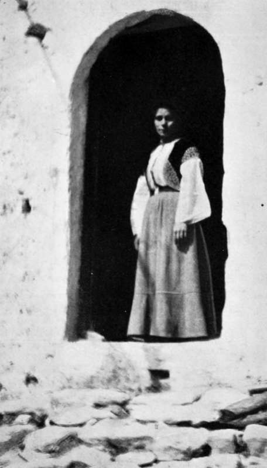

XII. The Balkans Revisited : Montenegro
Description
This section is from the book "Bird-Hunting Through Wild Europe", by R. B. Lodge. Also available from Amazon: Bird-Hunting Through Wild Europe.
XII. The Balkans Revisited : Montenegro
When the steamer reached Dulcigno on April 6, 1907, there was, as usual, a strong sirocco wind blowing, and we had to proceed to Val de Noche.
I have always been unlucky on arriving and departing from this port, having only succeeded once in landing at Dulcigno itself, and I have never yet left from there. The sailors of Dulcigno have the reputation of being the best in the Adriatic, but all the same I have known the steamer to be signalled to go round when the wind and sea have been quite moderate; while I have boarded them at Durazzo, where the port is equally unprotected, in a far worse sea, without any great difficulty.
Being obliged to hire three horses to take my luggage every time adds considerably to the expense. Passengers, it is true, are but few and far between. Most travellers visiting; Montenegro land at Cattaro and drive to Cetinje the capital, and so I suppose the passenger traffic is not worth considering; but the expense of carrying all goods and merchandise over the bridle-paths across the mountains, where there is not even a road, must add very considerably to the cost of living, and I wonder that they have not, for their own sakes, before now contrived to make some sort of breakwater, so as to enable steamers to call at Dulcigno in all winds. Materials at any rate are abundant enough in the shape of rocks. According to the Montenegrin legend, when the Almighty was distributing stones over the earth, the bag burst and they all fell on to Montenegro.
As we rounded the point, a large boat pushed off from the shore, packed to the gunwale with an excited throng of emigrants leaving their native land for the States. Fusillades of revolver shots re-echoed from the rocky headlands, and were repeated again and again until they drew alongside the ship. These revolver shots form a very picturesque farewell, and one particularly appropriate to these warlike people ; but they are not locked on with much favour by the ships' officers. And amid such a frantic crowd, all of whom are singing and shouting at the top of their voices, it is a wonder that accidents do not frequently happen, as man after man, half frenzied with excitement, draws his huge revolver from his waistband and discharges it into the air. However, I never heard of anybody being hurt on these occasions.
The waist of the steamer was soon packed with these people and their poor belongings-bedding, brightly coloured chests, and rude bundles. They take a deck passage to Cattaro, from whence they are transhipped to New York. I heard they earned good wages in the States, and send money back to their relatives in Montenegro.
Though the passengers-mostly German and Austrian tourists-and the ship's officials might consider them savages, I knew from previous experience that, despite the shouting and bravado and flourish of revolvers, they carried sore hearts in their breasts at parting from their rugged birthplace, and that sad eyes will strain through the falling tears for the last sight of the ship as she fades away from the vision of those left behind on the shore.
But there was no time for sentiment. I could see several friendly faces as the boat drew near, and as soon as the Montenegrins had all surged on board I had my luggage stored away in it, while I inquired about horses to tranship it to the town. Nikola was there, smiling a welcome, and I was overwhelmed with offers of cigarettes from all and sundry. It was a very different arrival from that first one only twelve months before. Even the men in charge of the packhorses grinned at me delightedly, and kept rolling cigarettes to offer me as we clambered up the rocky terraces through the grey-green olive trees. I felt quite an habitue of the place, and the little town of Dulcigno looked very familiar when we first sighted the bay from the summit of the hill, and began our descent through the narrow, stony lane.
L'Albergo Athanase (The Front Door)
However, I was sorry to find that the Albergo Athanase, which last year was on the shore, had removed to near the Custom House, whose portly official, revolver in belt, passed all my luggage with a wave of his hand, without even opening one of them.
Signora Draga, the patrone, and the fair, or rather the dark, Melitza gave me a hearty welcome, and appeared delighted to have me once more under their roof, where they allotted me a comfortable enough room. But I missed here the serenade of the waves on the beach, which used to lull me to sleep in the little balconied room in my old quarters. However, it was very pleasant thus returning to so many old acquaintances. I felt that I was among friends again, which is not a bad feeling to have in a foreign country.
But as soon as I had settled down and begun to get my belongings unpacked and in order, I missed my revolver. I knew I had had it on the boat while landing, because I had compared it with that belonging to a Montenegrin, who had one of a similar make, but now it couldn't be found anywhere. The Montenegrins have the reputation of being strictly honest-it is said, indeed, that you could leave a purse of gold on the highway for days and nobody would touch it-but I feared that a revolver, especially one of a superior pattern, had been too great a temptation to these weapon-loving people, where everybody is required, nay ordered, to carry a revolver always, and to carry it loaded.
But I had done them an injustice ; about three days later the missing revolver was found stuck inside the mouth of a large sack which contained my tent. One of the boatmen must have picked it up and put it where he felt sure I should find it, without saying anything about it. I was very glad to see it again ; and when Melitza, who had found it, displayed it dramatically, I had to apologize inwardly for my doubts as to the national honesty.
Continue to:
- prev: The Balkans Revisited : Albania. Part 8
- Table of Contents
- next: The Balkans Revisited : Montenegro. Part 2